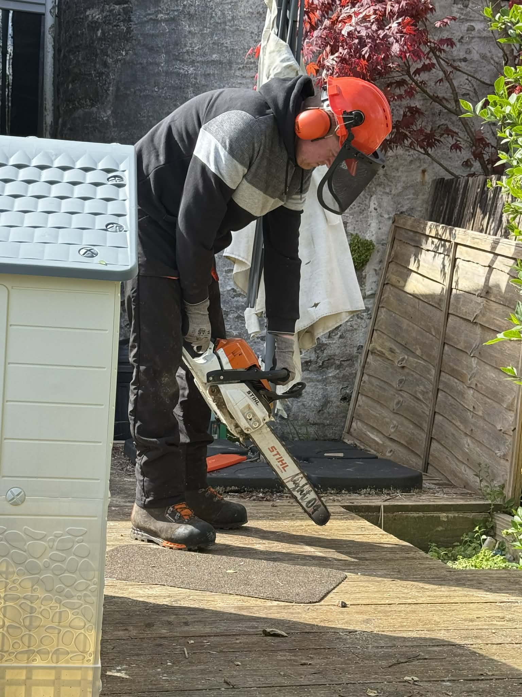

🌳 Tree Surgery
Crown reductions, pruning, dismantling and complete tree management carried out safely and professionally.
Fully Insured Tree Surgery, Hedge Cutting and Grounds Maintenance throughout Dunoon, Cowal Peninsula and Argyll.
Safe, reliable and professional tree care and grounds maintenance across Dunoon, Cowal Peninsula and Argyll.
Crown reductions, pruning, dismantling and complete tree management carried out safely and professionally.

Safe removal of dangerous, damaged and unwanted trees using professional equipment.

Precision hedge trimming, reductions and ongoing maintenance for domestic and commercial properties.

Grass cutting, garden clearance, site maintenance and complete outdoor property care.
Fast response for fallen trees, storm damage and dangerous branches throughout the local area.
Complete garden tidy-ups, vegetation removal and green waste clearance to leave your property looking its best.
A selection of recent projects completed by A Cut Above Argyll.

A Cut Above Argyll is a locally owned business providing professional tree surgery, hedge cutting and grounds maintenance throughout Dunoon, the Cowal Peninsula and the wider Argyll area.
We are proud to deliver safe, reliable and professional workmanship on every project, whether it's a single tree, a full garden clearance or ongoing grounds maintenance.
Call or message us today for friendly advice and a free, no-obligation quotation.
Dunoon • Kirn • Sandbank • Innellan • Toward • Cowal Peninsula • Argyll